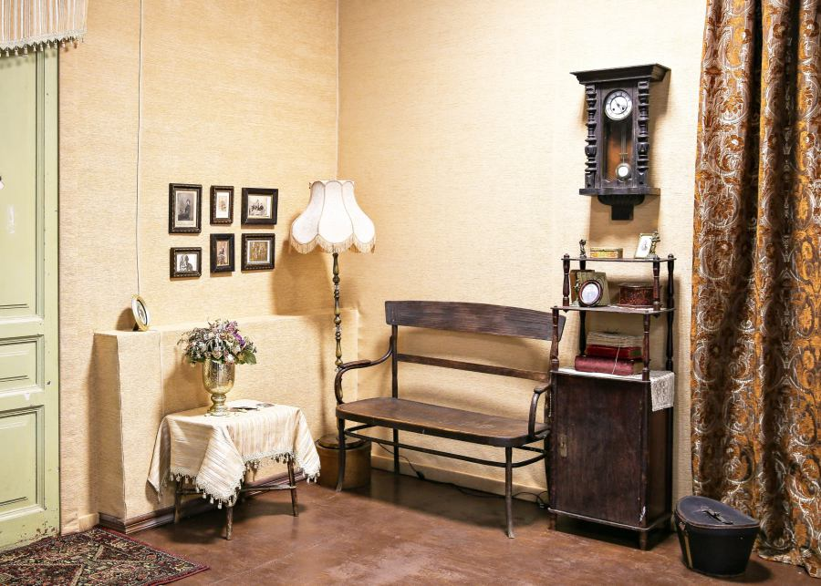
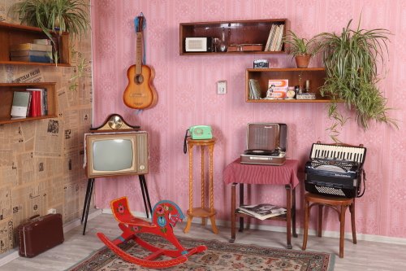
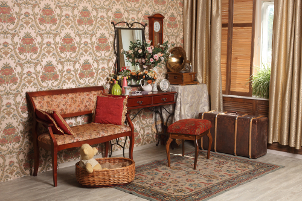
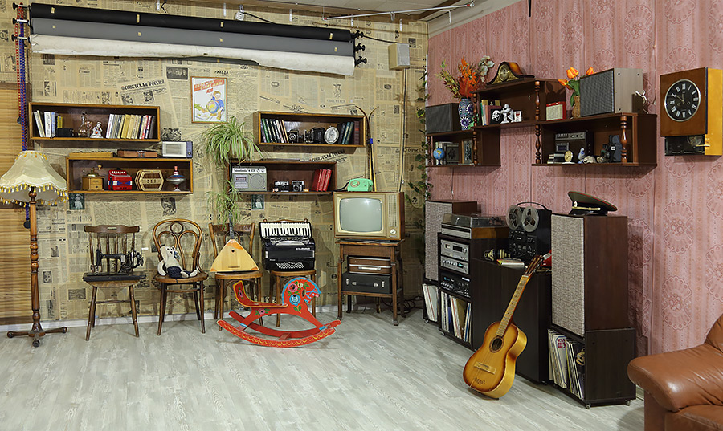
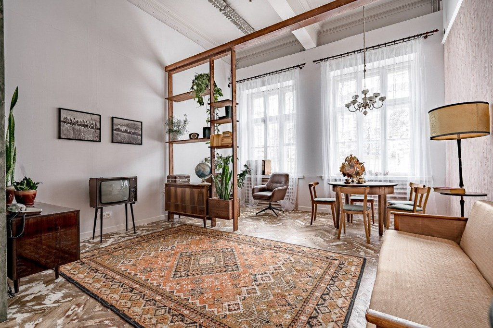
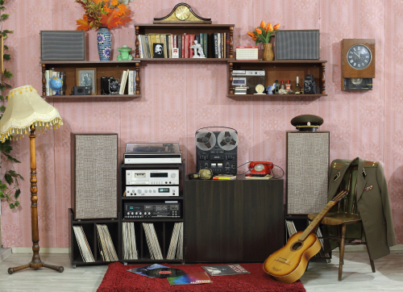

Ностальгия по золотым временам
Ретро-стиль — это путешествие во времени, возвращение к эстетике 60-80-х годов, когда дизайн был смелым, цвета насыщенными, а формы выразительными. Это направление охватывает различные десятилетия, от психоделических мотивов 60-х до неоновой эстетики 80-х.
Наша студия воссоздает атмосферу разных эпох с помощью характерных деталей: винтажной мебели, геометрических принтов, ярких цветовых акцентов и культовых предметов интерьера. Яркие оранжевые и зеленые тона, граненые формы, пластиковая мебель и узоры в стиле поп-арт создают ощущение погружения в прошлое.
Идеально для тематических фотосессий, стилизованных портретов, музыкальных проектов и съемок в винтажном стиле. Студия предлагает разнообразные зоны, воссоздающие разные десятилетия, что позволяет создавать уникальные образы от элегантных 50-х до дерзких 80-х. Профессиональное оборудование помогает достичь эффекта винтажной фотографии.






Если вы планируете фотосессию в студии, при записи указывайте, какую из локаций вы предпочитаете
Записаться